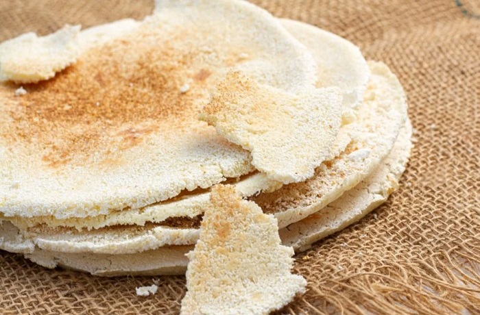

Comida Típica de Barranquilla
Sancocho de Guandú
Delicioso guiso a base de guandú, carne y plátano, ideal para compartir.

Casabe
Una tortilla hecha de yuca, crujiente y llena de sabor, perfecta como acompañante.

Mojarra Frita con Patacones
Una mojarra frita servida con crujientes patacones, un plato refrescante y delicioso.
Arroz con Coco
Arroz cocido en leche de coco, un manjar que encanta a todos.

Papa Rellena
Papas rellenas de carne, un bocado que no puedes dejar pasar.
Butifarra
Salchichón típico que se sirve con una rodaja de limón.
Alegría
Postre hecho con semillas de girasol, un deleite para el paladar.
Matrimonio de Bollo y Queso
Bollo de maíz acompañado de queso fresco, un plato típico y delicioso.
Carimañolas
Deliciosas empanadas de yuca rellenas de carne, perfectas para cualquier momento.